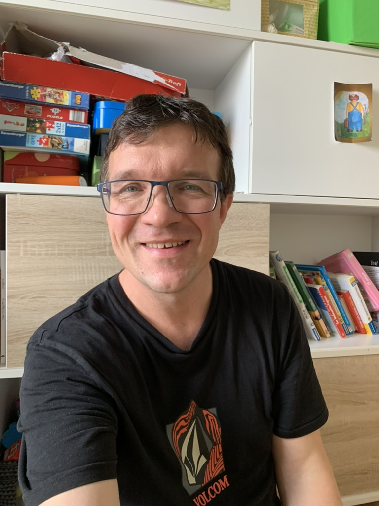

Hanns

Summary
Hard working and still on the search of the truth.
Education
- Abitur 1999, Gymnasium
- Diplom Informatik 2006, TU Dortmund
Work experience
Teamleader Softwaredevelopment
2022 till now
- lead an extraordanary team of developers
- build the connection between departments and customers
- deliver together with the team great results
Softwaredeveloper
2006 till 2021
- Leaddeveloper for complex automatic projects
- deep c++ experiences
- projects sites across europe
Certifications
Skills
- C++, Java, Rust, Typescript
- SQL (Oracle), Angular
Hobbies,
Contact